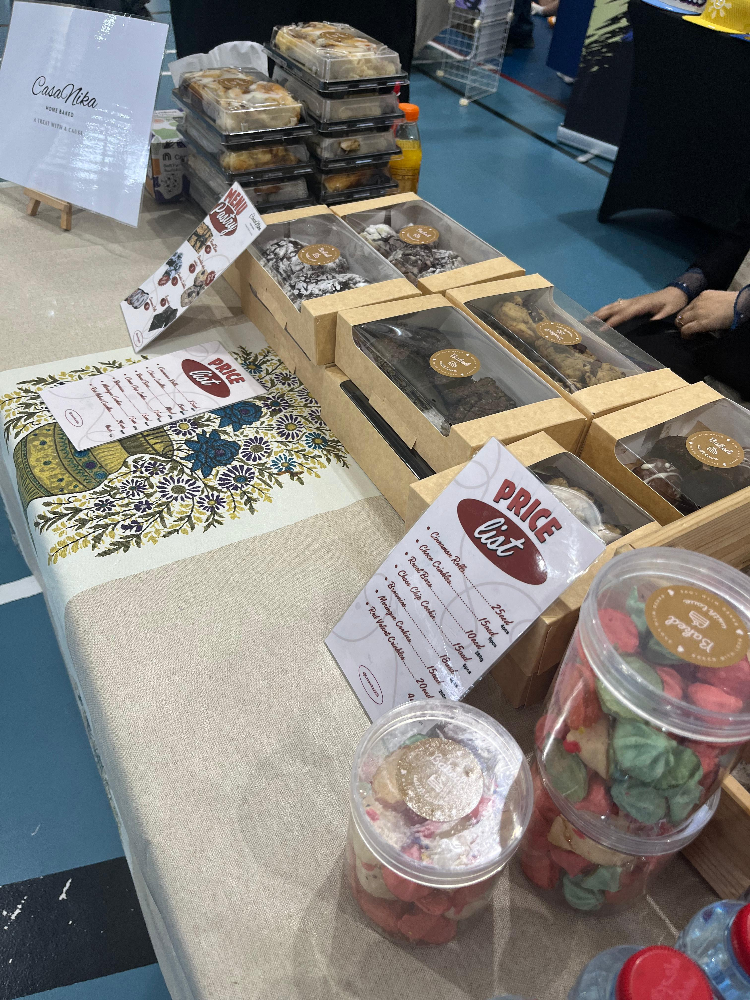

What is CasaNika
CasaNika is a small bakery like the baker. But she's also got a dream of growing the bakery big and so is her size.
Filler words to make the paragraph longer and emphasize the design of the page.
Words WORDS Words Words Words Words Words Words Words Words
Words
WORDS Words Words Words Words
Our Story
CasaNika
It all started from a girl who shared a short moment of baking carrot cakes with her mom. From that moment, I knew that I would love to make sweet treats for my loved ones.
The moment when my passion was put on hold, the more I yearn to mould it; and when I got the time to continue baking, the feeling of finally being able to pick up what you love doing started a fire in me.
I began little by little. From giving it as a snack, to gifts and then when I got the first order I felt overjoyed. Then a couple of orders, until I saw an opportunity to open a booth for our Uni Event. At first I was hesitant,
but my friends and family believed in me and pushed me to grab the opportunity. In the short 2 days of preparation we nailed it!

To be continued...